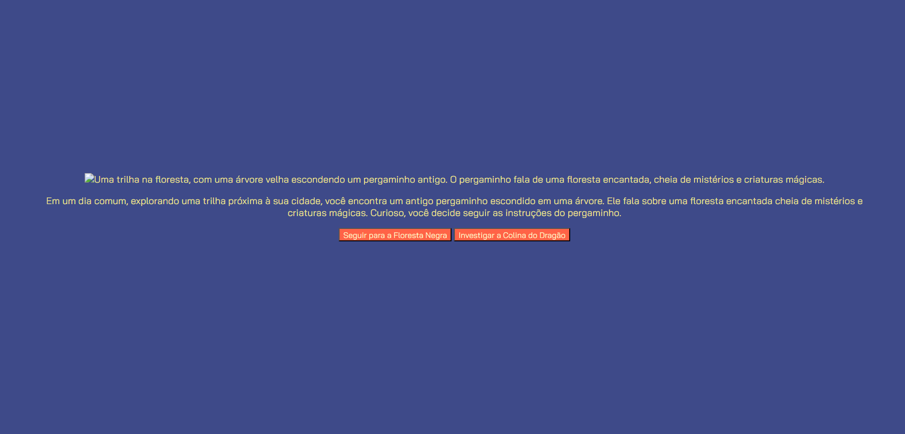

Meus projetos
L-viaFlix: Plataforma de Filmes
Projeto de uma plataforma web para exibição e pesquisa de filmes, onde os usuários podem navegar por diversas categorias, assistir trailers e saber mais sobre seus filmes favoritos. Desenvolvido com HTML, CSS e JavaScript para criar uma experiência visual agradável e interativa.

Em Busca da Vila Mágica: Jogo Interativo
Jogo interativo desenvolvido com HTML, CSS e JavaScript que convida o jogador a explorar uma vila encantada, resolver desafios e descobrir mistérios. Um projeto que une criatividade e programação para oferecer uma experiência divertida e educativa.